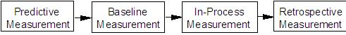

| Artifact: Learning Measurement Plan and Data Repository
(ORG 405)
|
|
 |
| The Learning Measurement Plan and Data Repository work product is a detailed measurement plan to guide data collection and to provide a repository for learning effectiveness data. |
Domains: Learning
Work Product Kinds: Measurement |
|
Purpose
The Learning Measurement Plan and Data Repository is the document that will be used to track learning effectiveness
measurement data throughout the lifecycle of the learning, or other performance improvement, intervention.
-
Identifies the best measures for determining the effectiveness of education, training, or some other learning
intervention
-
Used to monitor the progress of the intervention after it is implemented (deployed), as well as provide a
comparison point against which predictive and retrospective measures can be compared
-
Identifies whether any modifications in the intervention need to be made
-
Final measurements are used to determine ROI
|
Description
| Main Description |
In this work product, detailed guidance is provided for collecting both business results and Learning Outcomes data.
Data collected is collected for Predictive, Baseline, In-Process and Retrospective measures.

Predictive Measurement
Its purpose is to explore the linkage between potential interventions and desired business results, identify measures,
and inform intervention requirements. Predictive measurement provides valuable data before investment decisions are
made -- to increase the value of the learning portfolio and learning interventions -- before a lot of money is spent.
It is based primarily on qualitative data and estimated quantitative data. Its primary purpose is to
increase understanding of the relationship between proposed interventions and business results. Predictive measurement
is also valuable for identifying business results-oriented learning measures and business requirements for proposed
interventions.
Baseline Measurement
Baseline Measurement is measurement that occurs prior to implementing an intervention. These data are used to compare
with post-implementation data in order to determine improvements due to the intervention. Measures to be used are
specified in the Baseline Data Collection Plan. This plan identifies the measures and when and how they will be
collected. In addition, information is also typically provides about who “owns” the data, the collection process
(manual or automatic), data integrity, security, resource requirements for collection, skills needed, tools available
and any constraints in collection.
In-Process Measurements
In-Process Measurements are measurements that are used to monitor the progress of an intervention throughout its
deployment. This form of measurement facilitates the identification of intervention and fixing of problems during
implementation. The number of in-process measurements taken will vary depending on the length of the project. In-
process measurements might not be applicable for very brief interventions, when a single data point might be
sufficient.
Retrospective Measurement
Retrospective Measurement is final measurement that occurs at the end of the intervention deployment. This does not
necessarily mean that the intervention is terminated and taken out of service, but that a point has been reached at
which the intervention is sufficiently mature that it can be retrospectively measured. Based on this data, Return on
Investment (ROI) or other valuation calculations can be done.
|
| Notation |
The Measurement Menu section of the Learning Measurement Plan and Data Repository work product is used for identifying
and prioritizing the potential measures derived from a causal chain or other measurement inventory process. It is
crucial that these measures be clearly linked with desired business results.
A Measurement Menu should use a three-column format:
-
The first column is used for the proposed measures.
-
The second column is used for the strength of the linkage of the measure with the intervention – Strong (S),
Moderate (M), or Weak (W).
-
The third column is used for the ability to measure – In other words, accessibility or availability of the data
for the proposed measure – High (H), Moderate (M), Low (L).
The Learning Measurement Plan and Data Repository are used to document the measures to be used and house the data
to be collected over the life of the project. The form is divided into two parts: Business Measures and Learning
Outcomes.
-
Business Measures is a list of the highest priority measures selected from the Measurement Menu. Prepare the form
with columns for each expected measurement to be collected, including multiple columns for repeated in-process
measurements.
-
The Predictive Measurement column is for an estimate of the impact of the intervention on each measure. This
can also be interpreted as a goal or target value.
-
The Baseline Measurement column is for data collected before the implementation of the intervention.
-
The In-Process Measurement columns are for data collected during the implementation of the intervention.
-
The Retrospective Measurement column is for data collection after the completion of the implementation.
|
Illustrations
Key Considerations
The following advice and guidelines will help you ensure the greatest success in using the Learning Measurements work
product:
-
The Measurement Menu represents a preliminary list of potential measures. Think of it as similar to the menu in a
restaurant; you need to choose the items (measures) that you feel are most appropriate.
-
The selection of measures is extremely important. It is always best to select operational measures that are
already being collected. This will reduce the data collection burden and cost. New measures should be used when
the measures will add real value.
-
Proposed measures should be rated in terms of the accessibility of measurement data. It is very important that
measurement not be a chore. Most measures should be routinely tracked by the organization. Be careful not to
select measures for which data will be too difficult to collect.
-
Utilize existing data collection to the extent possible. For example, if your client is collecting weekly
reports that record types of rejections, errors or defects, then record and use that data.
-
Collect both in-process and outcome data, if possible. While the process data can help pinpoint improvements in
the intervention, e.g., process, outcome data in the form of the predictive and retrospective measures are
critical to linking interventions to business results
-
Make sure that you budget for collecting data around multiple in-process measures.
-
Use interviews and observation (qualitative methods), as appropriate, to record and track in-process measures.
Don’t just rely on quantitative (numerical) methods.
-
As a rule of thumb, a sample size of 50 is considered the mimimum number of data points for results that are
representative of the population. Selecting a smaller sample from a given population would produce results that
may not be consistent with the results from analyzing the entire population.
-
One way to verify process improvements using in-process measures is to compare the output of the project or
process after implementing the recommeded changes with the output obtained before making these changes to the
intervention. The conclusions can benefit both current and future interventions depending on when you analyze
the data.
-
If you get inconsistent results from multiple in-process measures, this may be attributable to various factors
including the measures, the data collection process, the training of the person(s) collecting the data, the
instructor/mentor who taught the person collecting the data, etc
-
Predictive Measurement has one great advantage over the other phases of measurement – your data can be based on
estimates, rather than actual data. However, this is a two-edged sword. There is the danger of selecting
measures for Predictive Measurement that cannot be measured in the real world of the organization.
-
Predictive Measurement estimates should be checked for credibility with other stakeholders before they are
finalized.
-
All measurements, except for In-Process Measurement, should be single data points. Unless the intervention
implementation is very brief, it is advisable to do a number of in-process measurements. In-process measurement
should continue until the completion of the intervention.
-
When specifying measures, define the measure (e.g., warranty costs), the data collection method (e.g., warranty
costs database), and any special conditions related to the measure (e.g., data between August 1, 2001 and
December 31, 2002).
-
Learning Outcome Measures include measures of the other traditional levels of learning measurement and is set
up similar to the Business Measures section.
-
The Predictive column is for pre-intervention estimates or to set a goal or target for Levels 0-3 measurement.
-
The Baseline column is for recording pre-intervention data.
-
The In-Process column lets you track changes during the deployment of the intervention, if appropriate.
-
The Retrospective column is for post-implementation data.
-
In addition to the information recorded in the Learning Measurement Plan and Data Repository Form, other
information is useful for maintaining high-quality data collection. It is useful to identify as much of the
following information as possible and record notes on them as an appendix to the Learning Measurement Plan and
Data Repository Form.
Processes and Infrastructure
-
Current data collection processes
-
Supporting infrastructure (hardware and software) for data collection so appropriate software and hardware can
be selected for implementing the Learning Measurement Plan.
-
Processes for communicating the data collection results including reporting formats, standards, tools/templates
and samples. Knowling what reporting formats and processes are used and acceptable in the organization can help
in tailoring the reports to the organizational decision makers.
-
Processes and criteria for checking and ensuring the integrity of the data and resolving any integrity
problems.
-
Sampling plan and processes including source of the sample, type of sample, required margin of error, sample
size, method of selecting sample to ensure representativeness
-
Data security processes and standards specifying who will have access (access control), security levels, how
the data will be stored (medium and format).
-
Data retention (physical and electronic) processes and standards, including length of retention, access,
security, disposal
Tools:
-
Analytic tools – databases, spreadsheets, statistical packages – that can used for analysis
-
Data collection instruments – templates, forms, samples
Roles and Skills Needed:
-
Job roles supporting data collection and analysis and specific individuals who perform these job roles who can
be consulted for assistance, if needed. Examples of such job roles include data analysts, database specialists,
statisticians, survey/instrument specialists, industrial/organizational psychologists, and attorneys
specializing in data collection issues, etc.
-
Current and required ata collection skills of employees and management, including quantitative and qualitative
literacy. This information can help determine if current skills and knowledge are adequate or if additional
skill development is needed or a consultant should be engaged.
Other Information:
-
The owner of the data -- the person who will provide access to the data.
-
Whether data will be collected manually or automatically, or any combination of both.
-
The procedure for how the data can be most efficiently collected and alternate methods considered, but rejected
and the reasons why they were not chosen.
|
Tailoring
| Impact of not having |
Without the Learning Measurement Plan and Data Repository work product:
-
There will be no reference point against which to judge the effectiveness of the post-implementation intervention
-
Refinements ("mid-course corrections") cannot be made to improve the intervention to maximize the results for which
the intervention was designed
-
Learning solution ROI cannot be determined
|
| Reasons for not needing |
The Learning Measurement Plan and Data Repository work product will be of limited value, and should probably not be
used, under the following circumstances:
-
When training is ad hoc.
-
When training employs unstructured, informal on-the-job training
-
When the intervention is difficult to isolate from other influences
-
When the data is not available due to cost, time, or capacity constraints, or is only being collected at levels 1-3
-
When there is no desire to enhance the intervention once developed
|
More Information
| Guidelines |
|
| Supporting Materials |
|
| Estimation Considerations |
|
© Copyright IBM Corp. 1987, 2012 All Rights Reserved
Property of IBM
These materials are intended only for use as part of an IBM engagement |
|